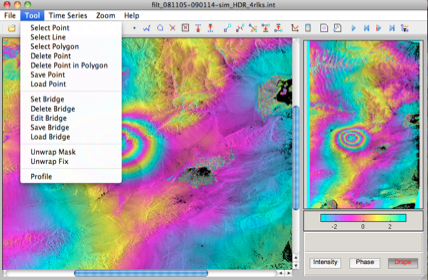

Introduction
SARVIEW is a Matlab-based software package to display SAR images and assist for phase unwrapping in ROI_PAC. Although it is designed for ROI_PAC, SARVIEW can be used to display any binary file given correct dimensions of the image. It is also convenient to show results generated by the π-RATE software.
The display functions and interface of SARVIEW are very similar to the MDX software developed at JPL/Caltech. SARVIEW deals with phase unwrapping correction in two independent ways: (i) making branch-cuts and bridges, then some programs and scripts outside SARVIEW can be used with ROI_PAC; (ii) making mask and adjusting integer cycle slips in SARVIEW.
SARVIEW can be used either in the Matlab command window or as a standalone program.
Please fill in the form to send me an email for SARVIEW. SARVIEW can only be used for academic purpose, and MUST NOT be used as a part of any commercial package.
